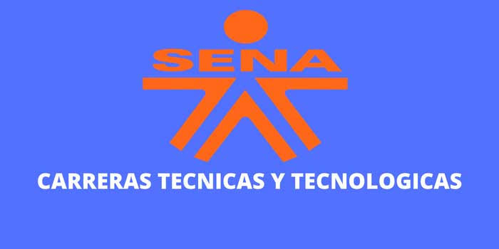
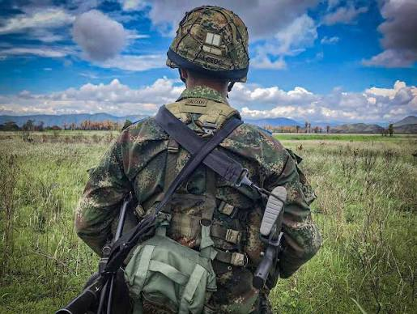
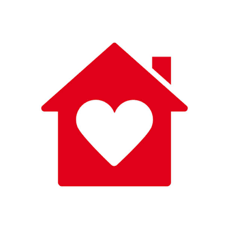
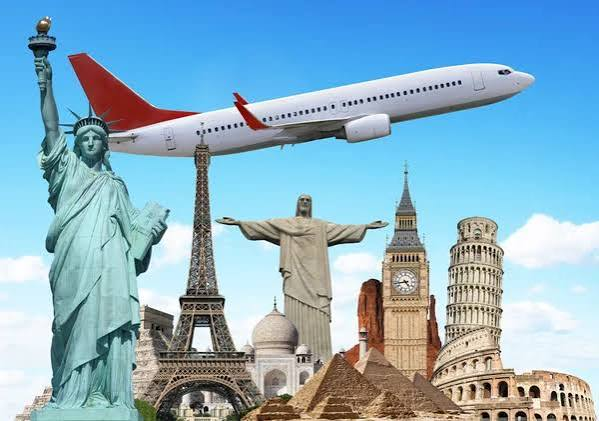
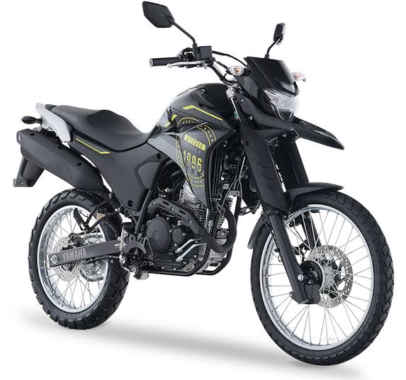
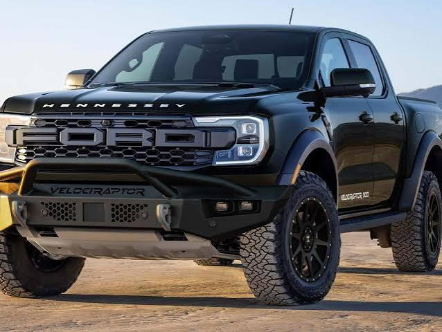

A partir del año 2027, iniciaré una etapa decisiva en mi desarrollo personal y profesional, guiada por la disciplina, la superación y la búsqueda de estabilidad. Mi plan está estructurado en metas a corto, mediano y largo plazo que me permitirán construir el futuro que deseo.
Mi primer paso será ingresar a un programa de formación técnica. Considero que adquirir un título técnico antes de dar el siguiente paso me brindará herramientas cognitivas, habilidades prácticas y la madurez necesaria para afrontar nuevos retos. Una vez concluida esta etapa, me presentaré de manera voluntaria a prestar el servicio militar. Esta experiencia será fundamental para poner a prueba mi carácter, cultivar la disciplina, fortalecer mi vocación de servicio a la patria y adaptarme a la vida castrense.
Tras cumplir con el servicio militar y con la certeza de que este es mi camino, daré el paso para vinculación y formación como militar profesional. Aspirar a esta carrera representa para mí un estilo de vida basado en el honor, la lealtad y la entrega. Mi objetivo en esta fase es ascender progresivamente, aportar activamente a la seguridad de la nación y consolidar la estabilidad laboral y económica que sustentará el resto de mis proyectos personales.
A medida que consolide mi estabilidad profesional y financiera, me enfocaré en construir mi ámbito personal:





